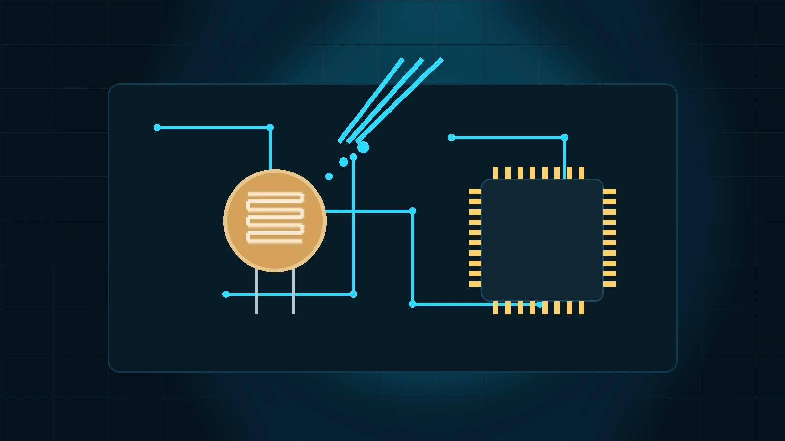
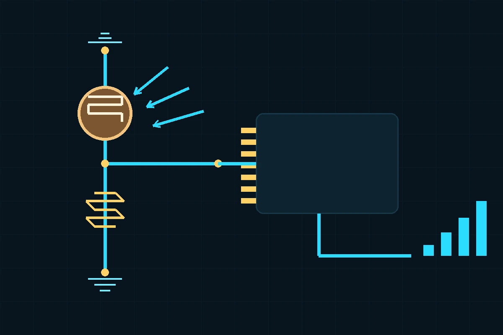
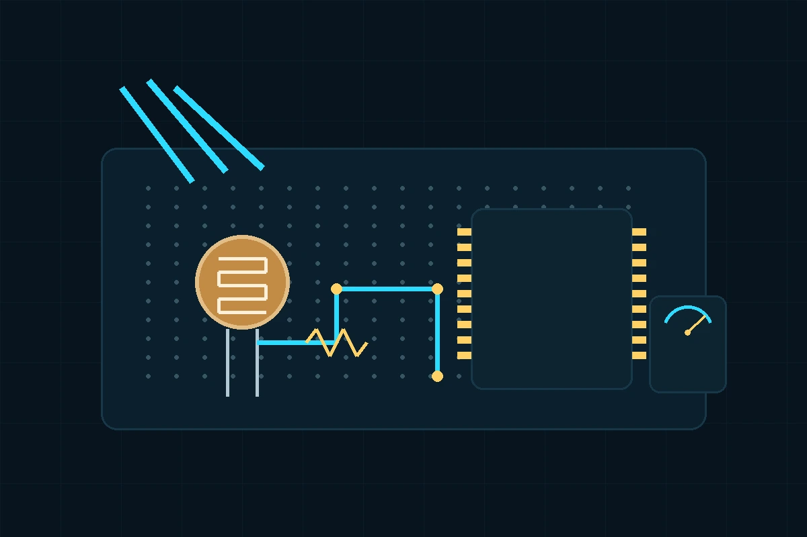

LDR یا Light Dependent Resistor یک مقاومت وابسته به نور است. برخلاف سنسورهای دیجیتال، LDR پروتکل I2C، SPI یا UART ندارد و پایههای آن نیز قطب مثبت و منفی ندارند. خروجی واقعی قطعه، تغییر مقاومت الکتریکی است؛ بنابراین معمولاً آن را همراه یک مقاومت ثابت به شکل تقسیم ولتاژ میبندیم و ولتاژ خروجی را با ADC میکروکنترلر میخوانیم.
کاربرد متداول LDR شامل تشخیص روز و شب، روشن و خاموش کردن خودکار چراغ، پایش نسبی روشنایی محیط، پروژههای رباتیک و ساخت ورودی نوری ساده است. نکته مهم این است که LDR برای اندازهگیری دقیق Lux طراحی نشده و برای کاربردهای دقیقتر باید از سنسورهای کالیبرهشده نوری استفاده شود.
سطح LDR از یک مسیر مقاومتی حساس به نور ساخته میشود. با افزایش تابش نور، تعداد حاملهای بار در ماده حساس بیشتر شده و مقاومت کاهش پیدا میکند. در تاریکی مقاومت میتواند به محدوده مگااهم برسد و در نور معمولی به چند کیلواهم تا چند ده کیلواهم کاهش پیدا کند.

در مدار عملی، یک پایه LDR به 3.3V متصل میشود و پایه دیگر آن به گره VOUT میرود. یک مقاومت ثابت مانند 10kΩ نیز از VOUT به GND وصل میشود. گره VOUT مستقیماً به یک پایه ADC مانند PA0/ADC1_IN0 در STM32 متصل میشود. با بیشتر شدن نور، مقاومت LDR کاهش پیدا میکند و در این آرایش، ولتاژ VOUT افزایش مییابد.

برای این آرایش رابطه تقریبی تقسیم ولتاژ برابر است با VOUT = VCC × R1 / (RLDR + R1). چون RLDR با افزایش نور کاهش مییابد، VOUT بیشتر میشود. اگر جای LDR و مقاومت ثابت عوض شود، جهت تغییر ولتاژ نیز برعکس خواهد شد.
| پارامتر | معنی | اثر در طراحی |
|---|---|---|
| Light Resistance | مقاومت قطعه در شدت نور مشخص، معمولاً 10 Lux | مقدار مقاومت ثابت تقسیم ولتاژ را تحت تأثیر قرار میدهد. |
| Dark Resistance | مقاومت LDR در تاریکی | دامنه تغییر VOUT و حساسیت به تاریکی را مشخص میکند. |
| Response Time | زمان واکنش به تغییر نور | LDR برای پالسهای نوری سریع مناسب نیست. |
| Spectral Response | حساسیت نسبت به طول موجهای مختلف نور | برای نور مرئی مناسب است ولی رفتار آن با منابع نوری مختلف یکسان نیست. |
| Power / Max Voltage | حداکثر توان و ولتاژ مجاز قطعه | در مدارهای میکروکنترلری معمولاً محدودیت اصلی نیست، ولی دیتاشیت پارت باید بررسی شود. |
برای پارت رایج GL5528 معمولاً مقاومت در 10 Lux در محدوده چند ده کیلواهم و مقاومت تاریکی در محدوده مگااهم است؛ عدد دقیق را باید از دیتاشیت همان سازنده و همان Batch قطعه بررسی کنید.
یک انتخاب اولیه مناسب برای R1 معمولاً 10kΩ است، اما مقدار بهینه به محدوده نور پروژه بستگی دارد. اگر محیط بسیار تاریک است یا مقاومت LDR در نقطه کاری بالا است، ممکن است 47kΩ یا 100kΩ نتیجه بهتری بدهد. برای بیشترین حساسیت، بهتر است مقدار مقاومت ثابت تقریباً هماندازه مقاومت LDR در نقطه نوری موردنظر انتخاب شود.
در ورودی ADC میکروکنترلرهایی مانند STM32، بالا بودن امپدانس منبع میتواند باعث خطای Sample-and-Hold شود. در چنین شرایطی Sample Time را افزایش دهید، مقدار تقسیم ولتاژ را بیش از حد بزرگ انتخاب نکنید یا در طراحی دقیق از Buffer Op-Amp استفاده کنید.
در نمونه زیر فرض شده تقسیم ولتاژ به ADC1 متصل است. چند نمونه ADC میانگینگیری میشوند تا اثر نویز کمتر شود. مقدار آستانه 2500 فقط نمونه است و باید در محیط واقعی کالیبره شود.
#define LDR_SAMPLES 16U
static uint32_t ldr_read_adc_average(void)
{
uint32_t sum = 0;
for (uint32_t i = 0; i < LDR_SAMPLES; ++i)
{
HAL_ADC_Start(&hadc1);
HAL_ADC_PollForConversion(&hadc1, 20);
sum += HAL_ADC_GetValue(&hadc1);
HAL_ADC_Stop(&hadc1);
}
return sum / LDR_SAMPLES;
}فایل کامل نمونه کد از مسیر assets/source-code.zip قابل دریافت است.
برخی LDRهای متداول از مواد حساس نوری مبتنی بر CdS استفاده میکنند. برای محصول تجاری، محدودیتهای مواد و الزامات RoHS را بر اساس پارت و بازار هدف بررسی کنید. همچنین LDR را خارج از محدوده ولتاژ و توان دیتاشیت استفاده نکنید.
یک GL5528، یک مقاومت 10kΩ و یک برد STM32 آماده کنید. ابتدا مقاومت LDR را با مولتیمتر در تاریکی، نور اتاق و زیر چراغقوه اندازه بگیرید. سپس مدار تقسیم ولتاژ 3.3V را ببندید و VOUT را هم با مولتیمتر و هم ADC بخوانید. بعد مقاومت 10kΩ را با 47kΩ جایگزین کنید و مقادیر را دوباره ثبت کنید. این آزمایش بهصورت عملی نشان میدهد چرا انتخاب مقاومت ثابت روی حساسیت مدار تأثیر دارد.
LDR یک سنسور نوری بسیار ساده و ارزان است که در واقع مانند یک مقاومت متغیر با نور رفتار میکند. این قطعه دو پایه بدون پلاریته دارد، پروتکل دیجیتال ندارد و برای اتصال به میکروکنترلر معمولاً در یک تقسیم ولتاژ استفاده میشود. برای طراحی قابل اعتماد باید پارت واقعی، مقاومت در نور و تاریکی، امپدانس ورودی ADC، Sample Time، نویز، زمان پاسخ و شرایط محیطی بررسی شوند.